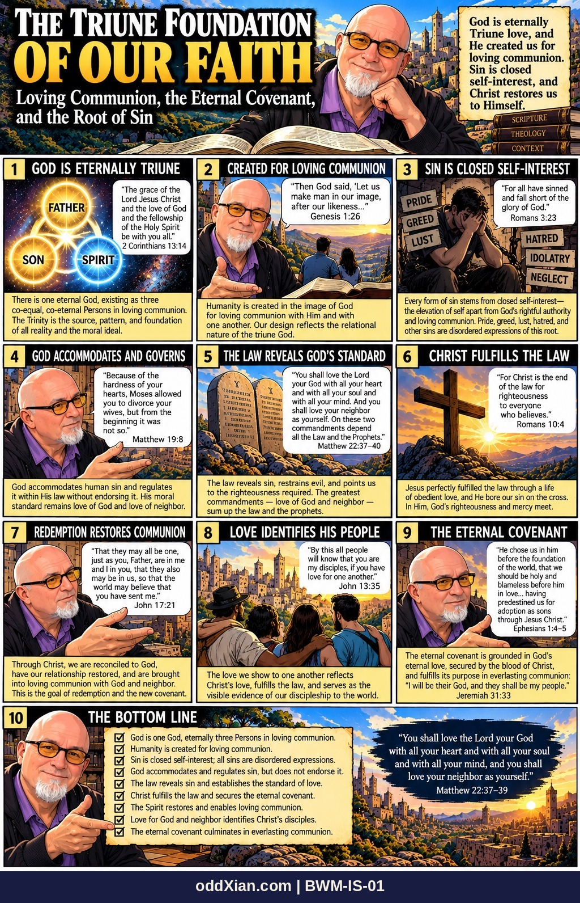

BWM-IS-01 · The Triune Foundation of Our Faith

The plate, panel by panel
THE TRIUNE FOUNDATION OF OUR FAITH. Subtitle: Loving Communion, the Eternal Covenant, and the Root of Sin. Framing box: God is eternally Triune love, and He created us for loving communion. Sin is closed self-interest, and Christ restores us to Himself. Book stack: SCRIPTURE, THEOLOGY, CONTEXT.
- GOD IS ETERNALLY TRIUNE. Bubble: "The grace of the Lord Jesus Christ and the love of God and the fellowship of the Holy Spirit be with you all." 2 Corinthians 13:14. Caption: There is one eternal God, existing as three co-equal, co-eternal Persons in loving communion. The Trinity is the source, pattern, and foundation of all reality and the moral ideal.
- CREATED FOR LOVING COMMUNION. Bubble: "Then God said, 'Let us make man in our image, after our likeness...'" Genesis 1:26. Caption: Humanity is created in the image of God for loving communion with Him and with one another. Our design reflects the relational nature of the triune God.
- SIN IS CLOSED SELF-INTEREST. Bubble: "For all have sinned and fall short of the glory of God." Romans 3:23. Scene signs: PRIDE, GREED, LUST, HATRED, IDOLATRY, NEGLECT. Caption: Every form of sin stems from closed self-interest, the elevation of self apart from God's rightful authority and loving communion. Pride, greed, lust, hatred, and other sins are disordered expressions of this root.
- GOD ACCOMMODATES AND GOVERNS. Bubble: "Because of the hardness of your hearts, Moses allowed you to divorce your wives, but from the beginning it was not so." Matthew 19:8. Caption: God accommodates human sin and regulates it within His law without endorsing it. His moral standard remains love of God and love of neighbor.
- THE LAW REVEALS GOD'S STANDARD. Bubble: "You shall love the Lord your God with all your heart and with all your soul and with all your mind. And you shall love your neighbor as yourself. On these two commandments depend all the Law and the Prophets." Matthew 22:37-40. Caption: The law reveals sin, restrains evil, and points us to the righteousness required. The greatest commandments, love of God and neighbor, sum up the law and the prophets.
- CHRIST FULFILLS THE LAW. Bubble: "For Christ is the end of the law for righteousness to everyone who believes." Romans 10:4. Caption: Jesus perfectly fulfilled the law through a life of obedient love, and He bore our sin on the cross. In Him, God's righteousness and mercy meet.
- REDEMPTION RESTORES COMMUNION. Bubble: "That they may all be one, just as you, Father, are in me and I in you, that they also may be in us, so that the world may believe that you have sent me." John 17:21. Caption: Through Christ, we are reconciled to God, have our relationship restored, and are brought into loving communion with God and neighbor. This is the goal of redemption and the new covenant.
- LOVE IDENTIFIES HIS PEOPLE. Bubble: "By this all people will know that you are my disciples, if you have love for one another." John 13:35. Caption: The love we show to one another reflects Christ's love, fulfills the law, and serves as the visible evidence of our discipleship to the world.
- THE ETERNAL COVENANT. Bubble: "He chose us in him before the foundation of the world, that we should be holy and blameless before him in love... having predestined us for adoption as sons through Jesus Christ." Ephesians 1:4-5. Caption: The eternal covenant is grounded in God's eternal love, secured by the blood of Christ, and fulfills its purpose in everlasting communion: "I will be their God, and they shall be my people." Jeremiah 31:33.
- THE BOTTOM LINE. Checklist: God is one God, eternally three Persons in loving communion. / Humanity is created for loving communion. / Sin is closed self-interest; all sins are disordered expressions. / God accommodates and regulates sin, but does not endorse it. / The law reveals sin and establishes the standard of love. / Christ fulfills the law and secures the eternal covenant. / The Spirit restores and enables loving communion. / Love for God and neighbor identifies Christ's disciples. / The eternal covenant culminates in everlasting communion. Closing verse: "You shall love the Lord your God with all your heart and with all your soul and with all your mind, and you shall love your neighbor as yourself." Matthew 22:37-39.